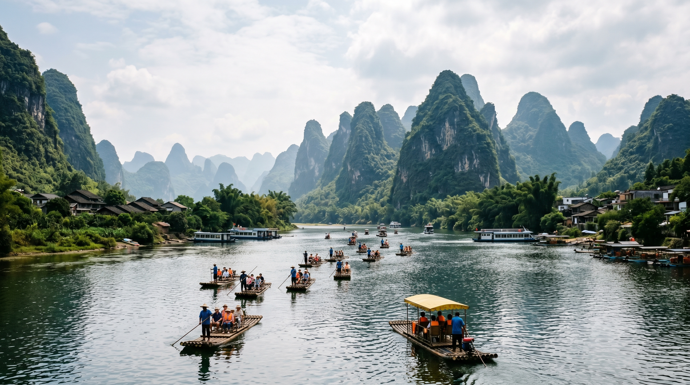
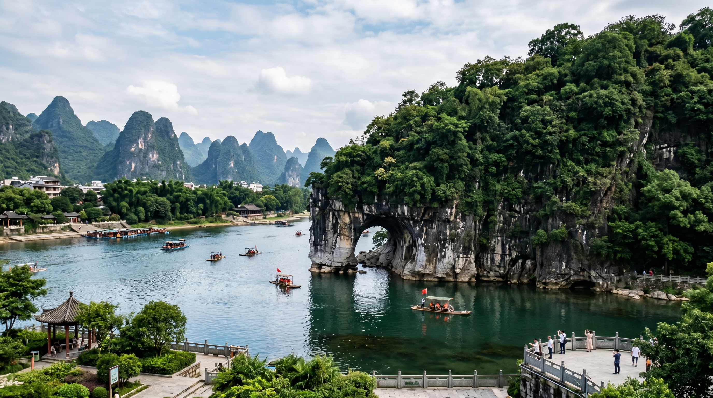
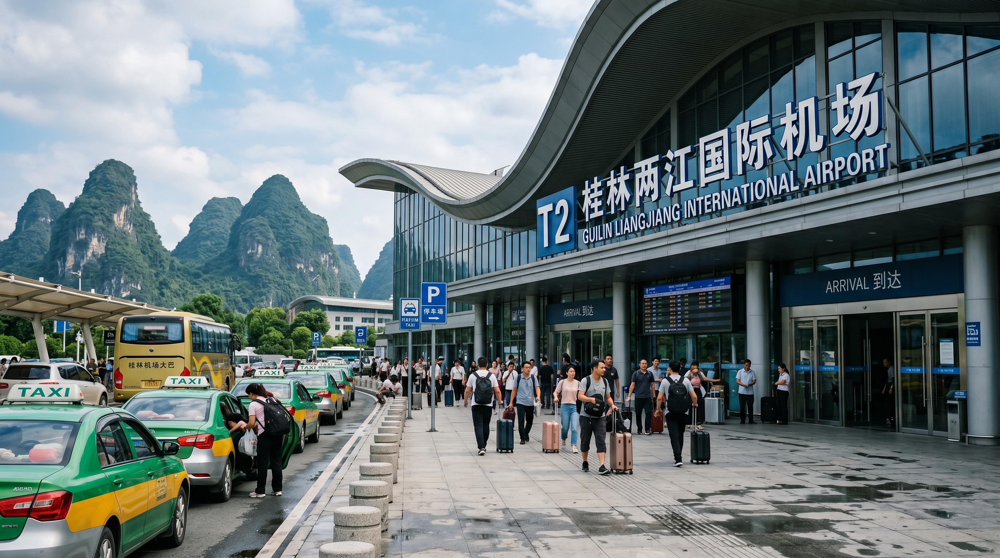
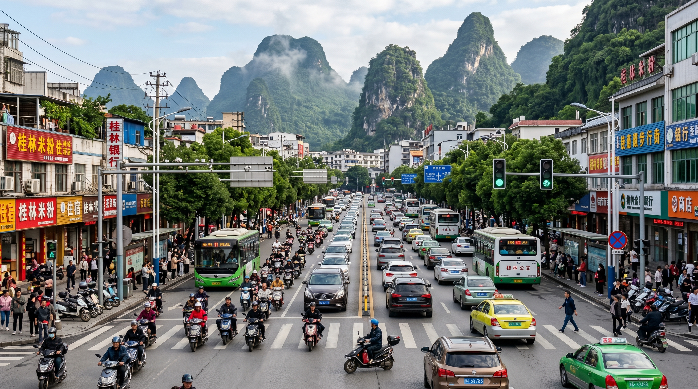
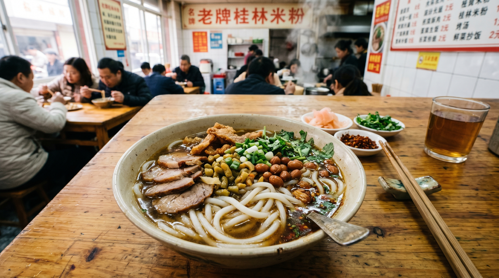
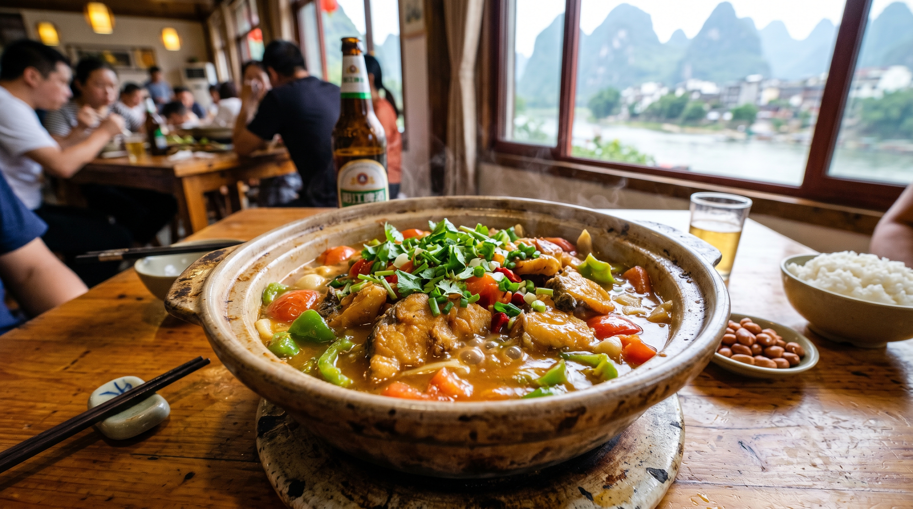
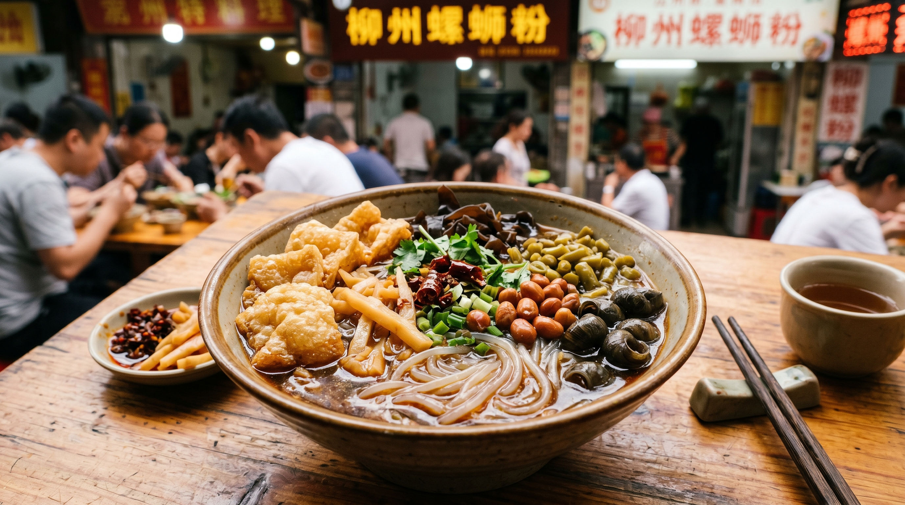
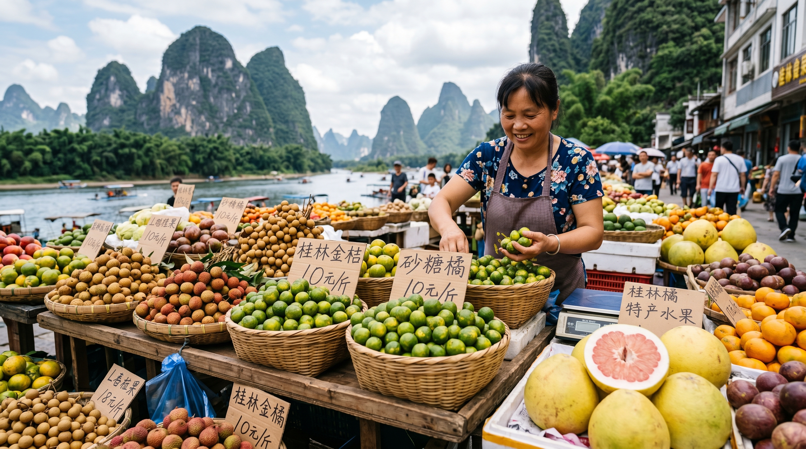

Quick Overview
Guilin, located in northern Guangxi, is world-famous for its breathtaking karst mountain landscape and picturesque Li River. It's a UNESCO-listed area renowned for natural beauty, traditional Zhuang culture, and unique local cuisine.
✅ Most Important: Take a Li River cruise from Guilin to Yangshuo – it's the iconic
Guilin experience!
Best travel season: April–October with mild weather and lush greenery, or November–March for fewer crowds.
Guilin Highlights Gallery
-

-

5-Day Detailed Guilin Itinerary
📅 Day 1: Guilin City Highlights
- Morning Visit Elephant Trunk Hill (Xiangshan Park)
- Afternoon Reed Flute Cave (Ludi Yan) & Seven Star Park
- Evening Two Rivers and Four Lakes Night Cruise
📅 Day 2: Li River Cruise to Yangshuo
- Morning Li River Cruise (Guilin to Yangshuo, 4-5 hours)
- Afternoon Explore Yangshuo West Street
- Evening Impression Sanjie Liu Light Show
📅 Day 3: Yangshuo Countryside
- Morning Biking in Yulong River countryside
- Afternoon Yulong River Bamboo Rafting
- Evening Local village dinner experience
📅 Day 4: Longsheng Rice Terraces
- Morning Day trip to Longji Rice Terraces
- Afternoon Visit Zhuang ethnic villages
- Evening Return to Guilin city
📅 Day 5: Culture & Departure
- Morning Guilin Museum & local market
- Afternoon Try local snacks and buy souvenirs
- Evening Departure
Top Attractions & Booking Info
| Attraction | Ticket Price | Booking Advance | Transport |
|---|---|---|---|
| Elephant Trunk Hill | ¥55 | Same day | City Bus 2/16/23 |
| Reed Flute Cave | ¥80 | Same day | City Bus 3/213 |
| Li River Cruise | ¥200–400 | 1-2 days | Guilin Wharf |
| Yulong River Rafting | ¥150–250 | 1 day | Yangshuo Shuttle Bus |
| Longji Rice Terraces | ¥100 | Same day | Tour Bus (2hrs from Guilin) |
Accommodation Guide
Best Areas to Stay
- Guilin City Center (Near Xiangshan Park)
- Yangshuo West Street (For nightlife & convenience)
- Yulong River Area (For countryside tranquility)
Tips for Foreign Tourists
- Book Yangshuo accommodation in peak season (April-Oct)
- Many boutique guesthouses with mountain views
- Negotiate long-term stay discounts in small villages
Transportation in Guilin


1. City Transport
- Public buses cover all city attractions (¥1-2 per ride)
- Taxis are cheap (starting fare ¥9) and drivers speak basic English
- Shared bikes available for city exploration
2. Intercity Transport
- High-speed train to Yangshuo (30 mins, ¥20)
- Tour buses to Longji Terraces (2 hrs, ¥50-80)
- Private cars/taxis can be chartered for day trips
3. Airport & Transport
- Guilin Liangjiang International Airport
- Airport bus to city center (¥20, 40 mins)
- Taxi from airport to city (¥80-100)
Guilin Food & Local Cuisine




Must-Try Dishes
- Guilin Rice Noodles (Guilin Mifen) - Local breakfast staple
- Yangshuo Beer Fish (Pijiu Yu) - Fresh fish cooked in beer
- Stuffed Lotus Root (Rou Sui Ou) - Sweet and savory local specialty
- Zhuang Ethnic Rice Cake (Ciba) - Traditional glutinous rice snack
- River Snails Rice Noodles (Luosifen) - Famous spicy noodle soup
🍜 Best food areas: Guilin Central Market, Yangshuo West Street, Local village restaurants
Essential Travel Tips for Foreigners
- 🍃 Bring sunscreen and insect repellent for outdoor activities
- ☀️ Wear comfortable shoes for walking and hiking
- 🚣 Book Li River cruises and bamboo rafts in advance
- 🍜 Try Guilin rice noodles at local street stalls (¥5-8 per bowl)
- 🏞️ Respect local ethnic culture when visiting Zhuang villages
- 📱 Download translation apps - limited English in rural areas
- 🆔 Carry your passport at all times, especially in remote areas